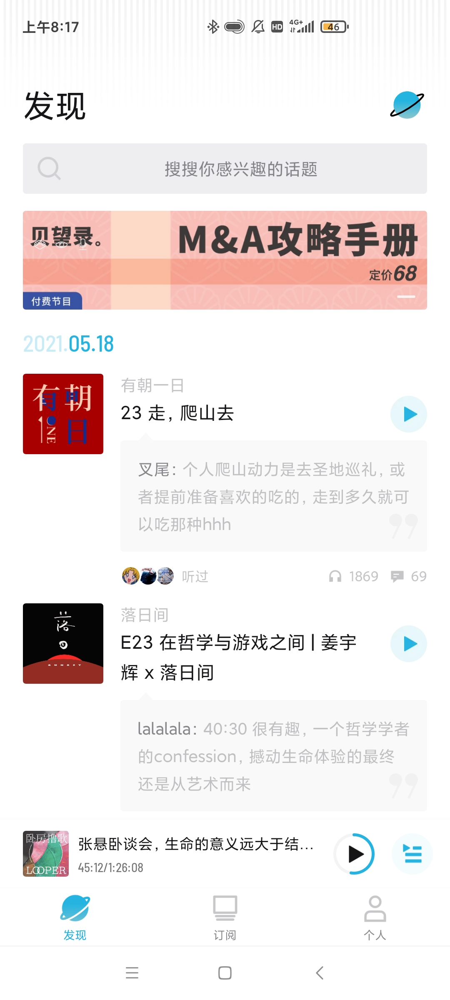
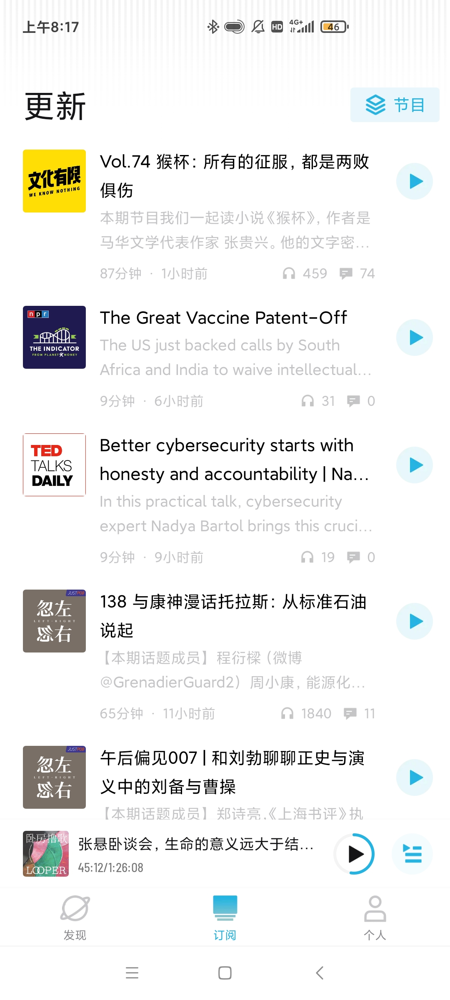

「小宇宙」是「即刻」团队出品的一款播客App。 从界面设计和产品体验来看，「小宇宙」与国内当下喜马拉雅、蜻蜓FM等 主流音频App的思路不同，它采取国际播客领域广泛使用的RSS订阅模式， 减少平台对内容运营的干涉。为什么「小宇宙」要采用RSS订阅模式？ RSS是一种对网站内容的简要总结，重点在“推送”和“聚合”。 如果说搜索是pull模式的解法，RSS就是push模式的解法。 简单来说，利用RSS收取信息至少需要两步： 在目标网站上找到RSS链接，再将链接添加到一个内容收纳容器（软件）里。 对于播客节目，「小宇宙」的作用就相当于播客收纳箱。 古典RSS设计的核心问题在于，它没有商业模式，甚至是反商业的。 以订阅文章为例，互联网用户借助RSS阅读器获取来干净的文章内容后，原本内容方网站的广告就没有人看了。 这也是很多用户使用「小宇宙」感觉清爽的原因。
进入主界面后，底部栏目由“发现”“订阅”和“个人”三个标签组成。
“发现”标签的内容为按日期倒序的信息流，
目前新增了“付费节目”专栏、“随声听”、“排行榜”、“听听他们的第0期”等栏目。
页面顶部设有搜索框，支持输入关键词或Feed地址搜索，理论上可以搜索到所有支持RSS订阅功能的播客。
“订阅”标签是个人订阅内容的入口。
用户初次使用时可以选择“从其他平台导入”，之后也可以在“个人”标签的设置中选择“导入节目”。
外部平台导入节目的更新内容，会与用户在App内已订阅的节目一起，出现在“订阅”中。
点击右上角的“节目”按钮，可以按照订阅播客查看往期节目。
“个人”标签是进行个性化设置以及查看个人收听历史的入口。
有「温度」的社交功能
播放界面设计简洁美观，进度条和背景的颜色都以电台 logo 的主题色为准。
支持倍速播放、定时暂停，以及快进快退等功能。
比较有特色的功能是点赞按钮，在进度条上你会看到高低不一的柱状条，这就代表了对应位置的热度，
通过点赞可以标记自己认为精彩的部分，用户可以直接拖动进度条跳转到被点赞最多的部分收听。
在评论时也有一个类似的设计，你可以在想和别人分享的部分直接评论，
打下时间戳，其他用户可以直接点击跳转到对应部分，有点像视频网站里的弹幕。
在评论区看到有意思的评论，点击头像可以看到他的个人主页，
上面有订阅列表以及最近听的三个单集节目，收听时长算是一个「成就系统」。